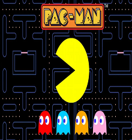
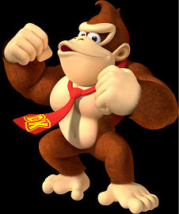
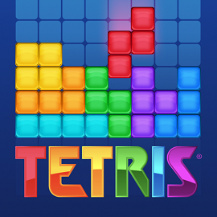
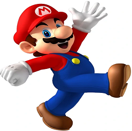

Los mejores juegos del siglo XX
Elegir los mejores videojuegos del siglo pasado suele ser una tarea imposible, ya que cada franquicia tiene miles de fanaticos, pero en esta nota trataremos de describir los mejores
"Pac-Man" (1980)
Es un videojuego arcade creado por el diseñador de videojuegos Toru Iwatani de la empresa Namco, y distribuido por Midway Games al mercado estadounidense a principios de los años 1980. llegó a tener el récord Guiness del videojuego de arcade más exitoso de todos los tiempos con un total de 293 822 máquinas vendidas desde 1981 hasta 1987 y acabó con el dominio de Space Invaders. Su autor destaca que fue el primer videojuego que no se basaba en eventos de guerra o formatos "Shooter" a diferencia de estos tenia un formato humoristico que capto la atencion de niños y mujeres.
"Donkey Kong" (1981)
Creado por Shigeru Miyamoto en 1981, dio origen a la serie mas grande de juegos de diferentes generos y cuenta con numerosos spin-off. El personaje principal era un gorila. fue un gran avance para Nintendo y para la industria del videojuego. Las ventas de la máquina fueron rápidas, con el juego convirtiéndose en una de las máquinas de arcade más vendidas de principios de los ochenta. El juego en sí fue una gran mejora con respecto a otros juegos de su tiempo, y con la creciente base de consolas para vender, pudo obtener una gran distribución.
"Tetris" (1984)
Fue un videojuego originalmente desarrollado por Alekséi Pázhitnov en la Unión Soviética. El juego (o una de sus muchas variantes) está disponible para casi cada consola de videojuegos y sistemas operativos de PC, así como en dispositivos tales como las calculadoras gráficas, teléfonos móviles, reproductores de multimedia portátiles, PDAs, reproductores de música en red e incluso como huevo de pascua en productos no mediáticos como los osciloscopios. Aunque su version mas exitosa fue lanzada para Game Boy. La edición número 100 del Electronic Gaming Monthly otorgó a Tetris el número 1 en el escalafón de "Mejores juegos de todos los tiempos". El fundamento del juego son las poliformas conocidas como poliominós, más concretamente las combinaciones de tetraminós. Si, por ejemplo, se produce una larga secuencia de piezas en forma de Z, en algún momento el jugador estará obligado a dejar un hueco en la esquina derecha, sin poder rellenar el hueco anterior.
"Super Mario Bros. 3" (1988)
Este juego producido por Nintendo describe las aventuras de los hermanos Mario y Luigi. Ambos deben rescatar a la Princesa Peach del Reino Champiñón que fue secuestrada por el rey de los Koopas, Bowser. Super Mario Bros. fue el juego que popularizó al personaje de Mario, convirtiéndolo en el ícono principal de Nintendo, y uno de los personajes más reconocidos de los videojuegos, así como su hermano menor Luigi.